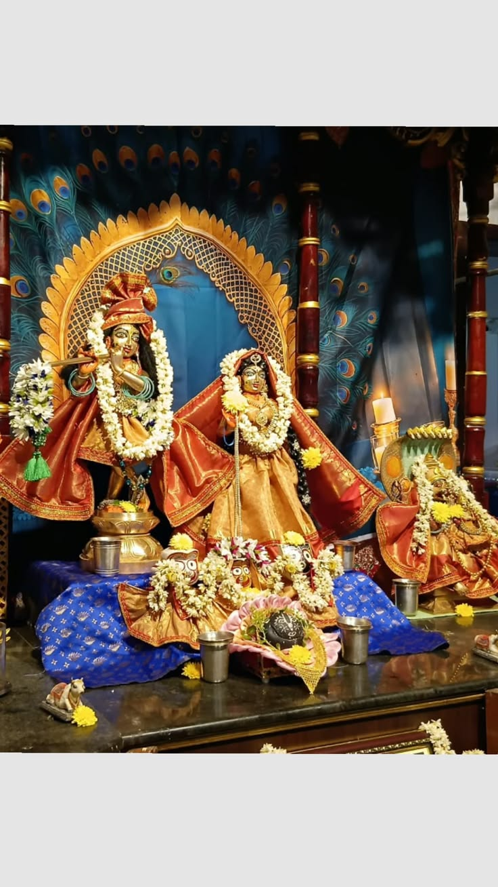
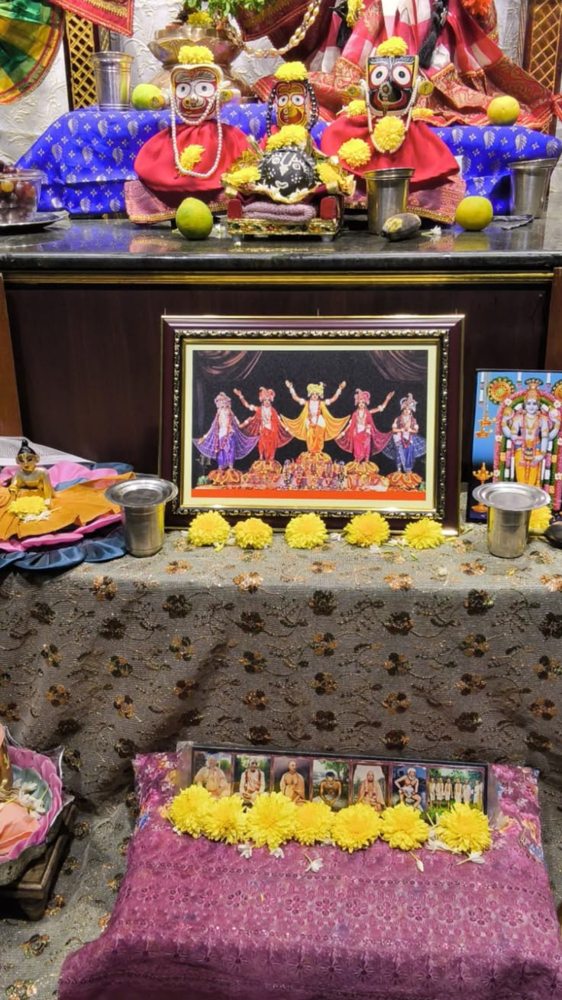
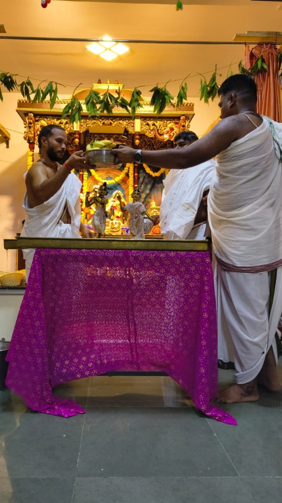
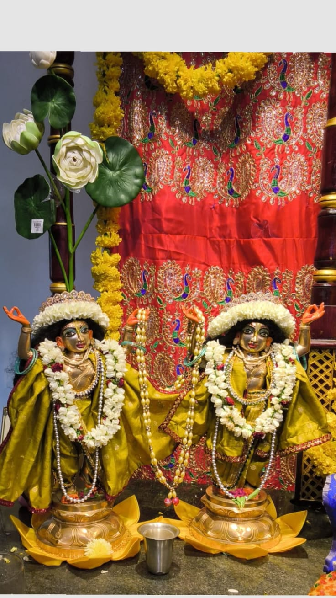
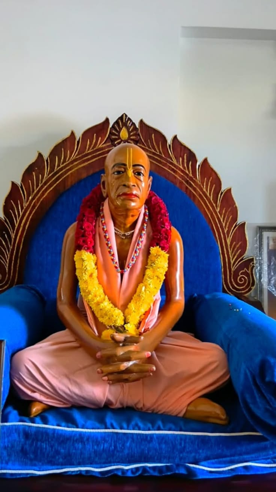
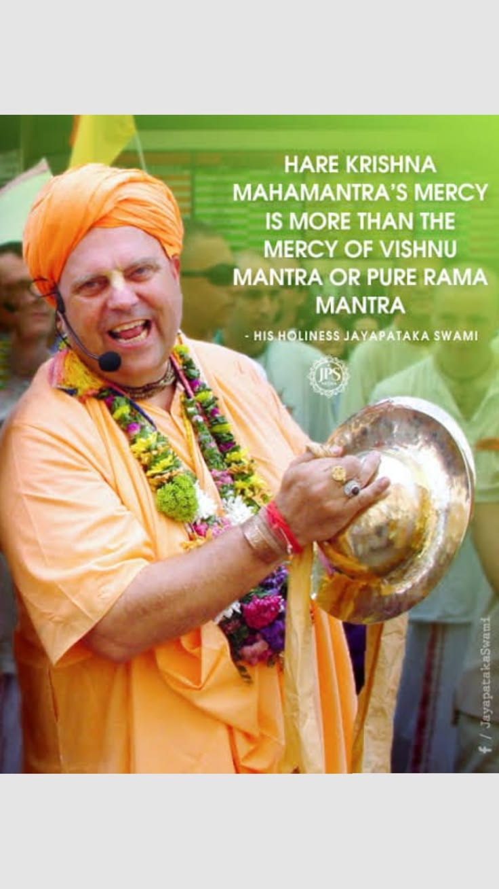

ISKCON Puducherry
Head of ISKCON
Darshan Timing
Available Books


History of ISKCON Puducherry




Programme
Location & Address
Contact Number
Exit
ISKCON Puducherry
← Back to Home
❀ Go to Home Page
Hare Krishna